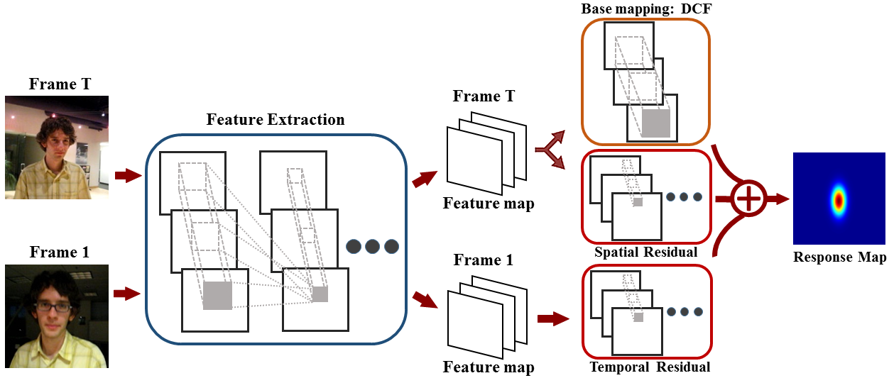

IEEE International Conference on Computer Vision 2017
CREST: Convolutional Residual Learning for Visual Tracking
|  |
Abstract
Discriminative correlation filters (DCFs) have been shown to perform superiorly in visual tracking. They only need a small set of training samples from the initial frame to generate an appearance model. However, existing DCFs learn the filters separately from feature extraction, and update these filters using a moving average operation with an empirical weight. These DCF trackers hardly benefit from the end-to-end training. In this paper, we propose the CREST algorithm to reformulate DCFs as a one-layer convolutional neural network. Our method integrates feature extraction, response map generation as well as model update into the neural networks for an end-to-end training. To reduce model degradation during online update, we apply residual learning to take appearance changes into account. Extensive experiments on the benchmark datasets demonstrate that our CREST tracker performs favorably against state-of-the-art trackers.
Spotlight
| Prior art methods | : Traditional / Convolutional features | + Discriminative correlation filters in the fourier domain | + Scale estimation filter. |
| Proposed | : End to end response map generation | + Residual learning to reduce model degradation | + Scale estimation via CNN. |
Demos
Downloads
| [CREST.pdf] | : The paper. |
| [Slides.pptx] | : The slides. |
| [Poster.pdf] | : The poster. |
| [Media Report] | : In Chinese. |
| [OTB2013.zip] | : The OPE results on the OTB 2013 dataset. |
| [OTB2015.zip] | : The OPE results on the OTB 2015 dataset. |
| [Code.zip] | : Available on GitHub |
BibTex (DOI)